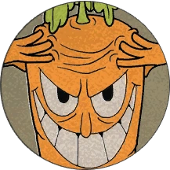

The Root Pack
The Root Pack is a group of four root vegetables residing on Inkwell Isle One, and the boss of the
Botanic Panic! level.
Appearance
 Sal
Spudder is a potato, Ollie Bulb is an onion with a big purple nose, and Chauncey Chantenay is a
carrot with forehead creases that hide his third eye. All of these root vegetables are rather large
compared to Cuphead and Mugman. The last member is Horace Radiche, a radish with tall leaves, purple
nose and eyebrows, green sclera, sharp teeth, and brown arms.
Sal
Spudder is a potato, Ollie Bulb is an onion with a big purple nose, and Chauncey Chantenay is a
carrot with forehead creases that hide his third eye. All of these root vegetables are rather large
compared to Cuphead and Mugman. The last member is Horace Radiche, a radish with tall leaves, purple
nose and eyebrows, green sclera, sharp teeth, and brown arms.
Battle
Intro
Sal Spudder bursts out of the ground with an angry expression on his face, looking towards the player(s).
He quickly resumes his idle animation as the fight commences. It was originally planned for Sal to have
a voice when emerging, but the idea was later scrapped.
Phase 1
 "Buttered, smashed, and mashed. It's over for you."
—Sal Spudder, Death Screen
After his intro, Sal Spudder will begin an attack pattern involving him spitting out three dirtballs,
and
then a knotted worm that the player can parry. Sal will spit out his projectiles faster every round of
his
attack, eventually going back to the starting pace. In Simple mode, he spits two dirtballs instead of
three
before the worm. His projectiles are also slower, and they are fired at a slower rate. In Expert mode,
the
projectiles are fired at a faster rate and move much faster.
"Buttered, smashed, and mashed. It's over for you."
—Sal Spudder, Death Screen
After his intro, Sal Spudder will begin an attack pattern involving him spitting out three dirtballs,
and
then a knotted worm that the player can parry. Sal will spit out his projectiles faster every round of
his
attack, eventually going back to the starting pace. In Simple mode, he spits two dirtballs instead of
three
before the worm. His projectiles are also slower, and they are fired at a slower rate. In Expert mode,
the
projectiles are fired at a faster rate and move much faster.
Phase 2
 "Hey little guy, it's O.K. if you have to cry!"
—Ollie Bulb, Death Screen
After Sal Spudder has retreated into the ground, Ollie Bulb will emerge out of the ground in the middle
of
the stage and look around. If the player attacks him, he starts to cry, with his tears coming down at
different intervals. All the player has to do is dodge the tears by moving left and right. There may
also be
pink tears that can be parried. In Expert mode, the tears drop quicker and there will be more falling
each
time he cries. In Simple mode, Ollie is skipped after defeating Sal Spudder, and the fight goes straight
to
phase 3. If you do not shoot him, he will retreat to the ground but another mini-boss will appear in the
next phase.
"Hey little guy, it's O.K. if you have to cry!"
—Ollie Bulb, Death Screen
After Sal Spudder has retreated into the ground, Ollie Bulb will emerge out of the ground in the middle
of
the stage and look around. If the player attacks him, he starts to cry, with his tears coming down at
different intervals. All the player has to do is dodge the tears by moving left and right. There may
also be
pink tears that can be parried. In Expert mode, the tears drop quicker and there will be more falling
each
time he cries. In Simple mode, Ollie is skipped after defeating Sal Spudder, and the fight goes straight
to
phase 3. If you do not shoot him, he will retreat to the ground but another mini-boss will appear in the
next phase.
Phase 3

"I'm lean, mean and full of beta-carotene."
—Chauncey Chantenay, Death Screen
After Ollie Bulb disappears, Chauncey Chantenay emerges into the background in a showy manner, and
proceeds
to rub his head to telepathically summon carrots from the background that home in on the player(s).
These
carrots can be destroyed (Hitpoints = 4/4/4). In Simple mode, there will be less homing carrots. The
carrots
will also be slower, less accurate in their homing, and have a longer wait time before starting to home
in.
In Expert mode, there will be more homing carrots. They will be faster, more accurate, and have a
shorter
wait time before starting to home in. Occasionally, Chauncey will open his third eye and fire three
laser
beams at the player(s). In Simple mode, the laser will be slower, and there will only be two beams. In
Expert mode, the laser will be faster, but there will only be two beams. After he fires these beams, he
resumes his regular attack of summoning homing carrots.
Secret Phase
 If the player(s) chooses not to attack Ollie Bulb while he looks around, he will not cry to attack, but
instead realizes you are not hurting him and leaves happily. As Ollie leaves, Horace Radiche jumps out
with an angry expression and start to spin around shortly after his intro, chasing the player(s) around
like Sally Stageplay's parasol. The player(s) would have to jump over him to dodge him. He pairs up with
Chauncey Chantenay acting as another obstacle in the final phase. When he is defeated, he will be dazed
and stop spinning and explode into pieces.
If the player dies in the secret phase, the progress bar will be obscured, just like the secret phases
that appear in other bosses.
If the player(s) chooses not to attack Ollie Bulb while he looks around, he will not cry to attack, but
instead realizes you are not hurting him and leaves happily. As Ollie leaves, Horace Radiche jumps out
with an angry expression and start to spin around shortly after his intro, chasing the player(s) around
like Sally Stageplay's parasol. The player(s) would have to jump over him to dodge him. He pairs up with
Chauncey Chantenay acting as another obstacle in the final phase. When he is defeated, he will be dazed
and stop spinning and explode into pieces.
If the player dies in the secret phase, the progress bar will be obscured, just like the secret phases
that appear in other bosses.
Before the Main Game
The Root Pack once confronted The Devil and became debtors of him, owing him all their souls, forcing
them to flee from The Devil.
Main Game
The Root Pack are considered the first Boss of the Game, Cuphead and Mugman arrive to collect their Soul
Contract, as the Cup Brothers have their Souls on the line of being taken away from The Devil, Sal and
Chauncey try to protect their Contract while Ollie Bulb isn't worried about their Contract. After
defeating The Root Pack, Cuphead and Mugman collect The Root Pack's soul contract.
Credits for information and images: Cuphead
Fandom Wiki